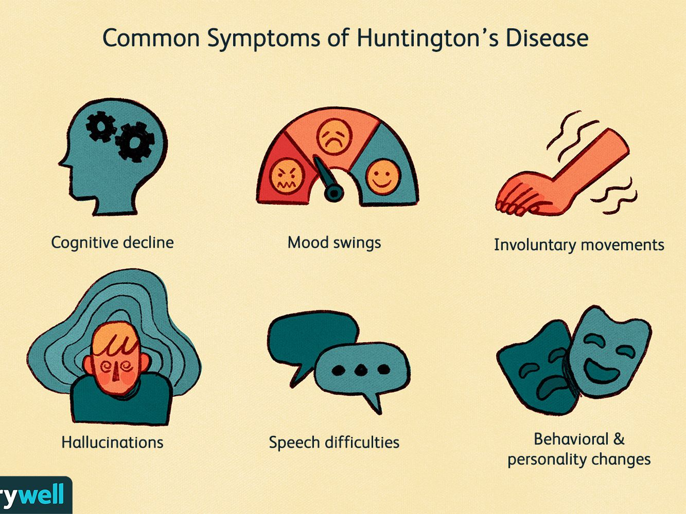

What are the symptoms of Huntington's disease?
Huntington's disease can greatly affect each individual patient that suffers from it. The symptoms can range from physical issues, cognitive problems and emotional struggles. The symptoms can begin appearing at numerous stages of life. However, it is most common for it to appear whilst they are young adults to around the middle of their lives.
Physical Symptoms:
- Stiffness in muscles
- Involuntary movement of certain muscles
- Issues with eye movement
- Loss of bodily function (swallowing, speaking)
- Fatigue
- Problems with walking, balance and posture
Cognitive Symptoms:
- Concentration troubles
- Problems with concentration, planning and thinking
- Worse short-term memory
- Stuck on thoughts or actions
- Lack of awareness
- Issues with learning
- Hallucinations
Emotional Symptoms:
- Mood changes
- Anxiety
- Depression
- Irratibility
- Obsessive-Compulsive disorder
- Bipolar Disorder
- Mania
- Insomnia
- Suicidal
- Loss of motivation
- Impulsive
- Social withdrawal